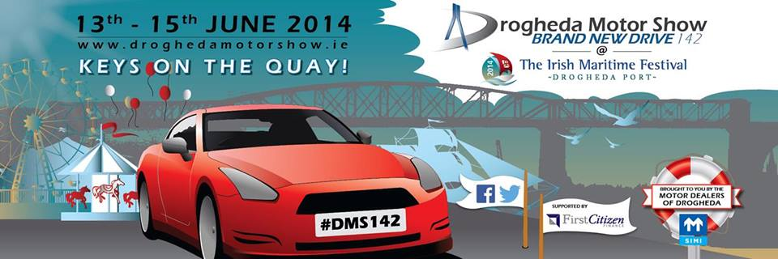

Drogheda Motor Show

Drogheda Motor Show - Brand New Drive 142
13th-15th June 2014 @ The Irish Maritime Festival, Drogheda Port
Facebook: www.facebook.com/BrandNewDrive
Twitter: @BrandNewDrive
Here come the cars. With the Drogheda Motor Show, Brand New Drive 142 arriving at The Irish Maritime Festival Friday 13th June, dealers across Drogheda have been busy getting ready.
Over 150 litres of car wax, 100 litres of window cleaning spray, 10 vacuum cleaners, 40 sponges and 10 buckets not to mention the oodles of car shampoo have all been used to get the cars ready for the Drogheda Motor Show.
The theme of the event is 'Keys on the Quay' and the dealers of Drogheda are determined to deliver a showcase that shines.
Parking up along the quay of the River Boyne will be over 50 new cars from 9 different brands. The brands showcasing their cars with 142 reg plates include Volkswagen, Ford, Toyota, Nissan, Mazda, Kia, Citroen, Opel and Skoda.
The Drogheda Motor Show is a showcase of the most up-to-date models on the market. Buyers and browsers can look at, sit in, smell and experience the features of a variety of different new 142 reg cars.